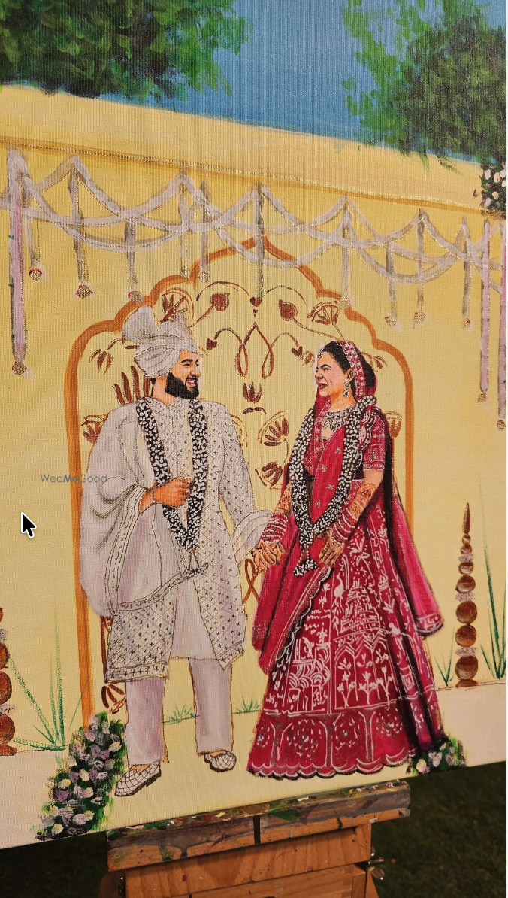
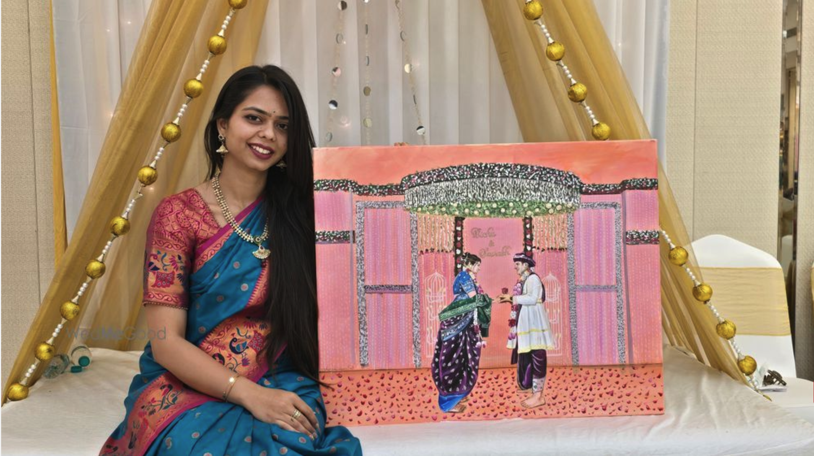
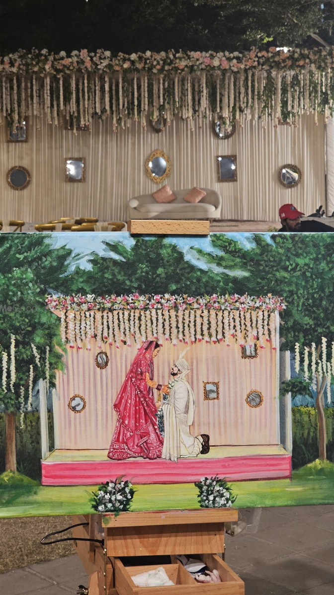
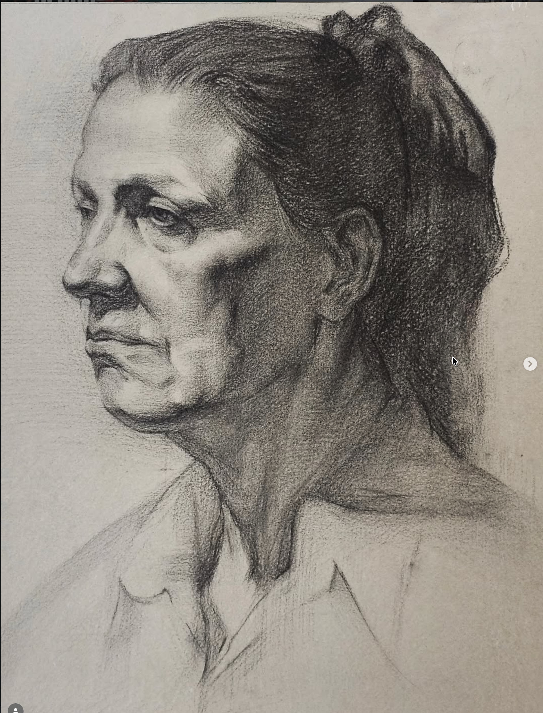
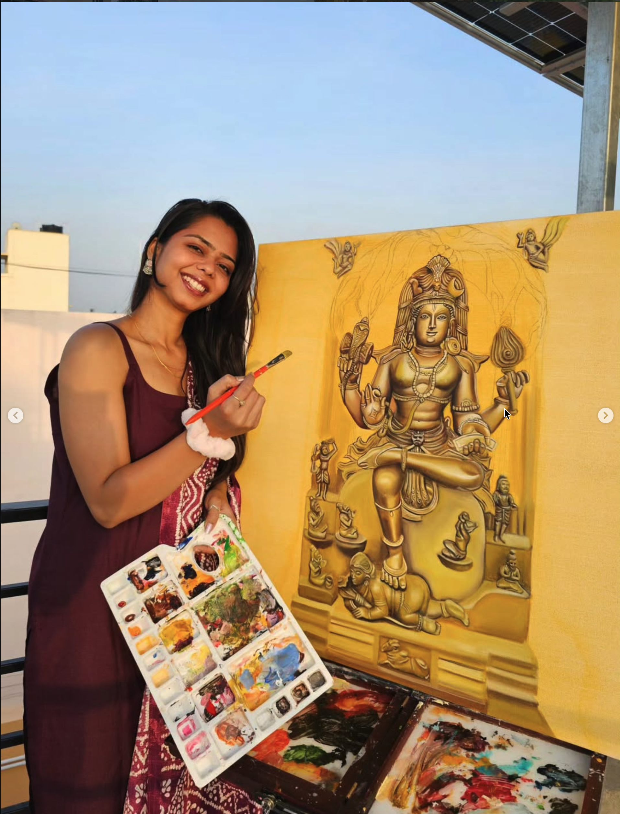
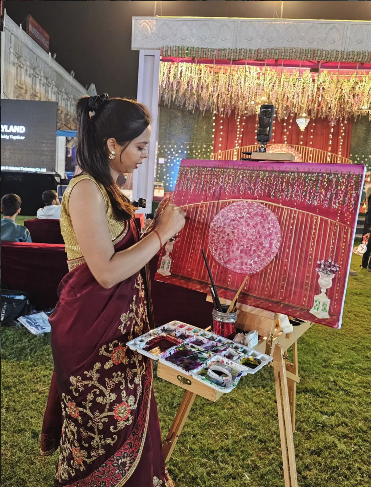
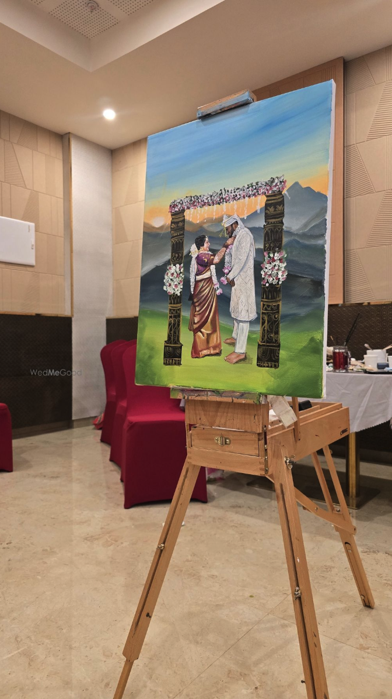
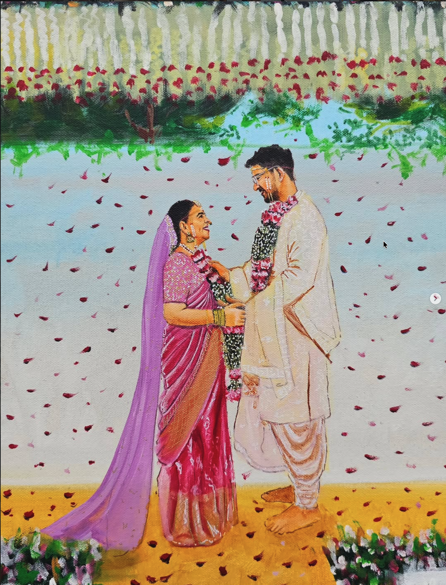
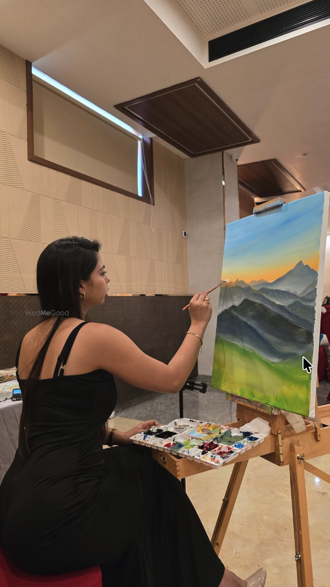

01 — 06
Live Wedding Painting
I paint your chosen moment live at the venue with acrylics, completing the artwork during the celebration.
Live weddings. Portraits. Pets. Spiritual art. Abstract work. Personal commissions. Each one begins differently.





I have always believed that a painting should feel personal.
Sometimes it starts with a wedding. Other times, it could be a photograph of someone you love, your pet, a special place, or simply an idea you have had for some time. Whatever the idea is, I create every painting with the person and story behind it in mind.
There is something very different about watching a blank canvas slowly become part of a celebration.
For live weddings, I arrive before the main moment, set up at the venue, and begin building the scene.
By the end of the event, the painting is complete and ready for its reveal.
See How It Works


I have loved drawing and painting for as long as I can remember.
I hold a BFA and MFA in Fine Arts and have been working as an artist for more than 10 years. I am also currently undertaking advanced academic art training through an Atelier programme.
The subjects change, but what I look for stays the same, something that makes the painting feel like it belongs to the person it was created for.
Share your idea, reference photograph or, for a wedding, your date and venue.
We decide the subject, size, composition, and the details that matter most to you.
Live wedding paintings are created in acrylic at the venue. Other commissions follow the agreed process and timeline.
A finished, original piece created specifically for you.
BFA and MFA in Fine Arts, with more than ten years of professional painting experience.
No templates. No two commissions begin with exactly the same story.
Years of painting around real celebrations have taught me how to work within the energy of the event without becoming a distraction.
Every canvas is individually painted and created as an original piece.
[Add genuine client testimonial here]
[Add genuine client testimonial here]
Behind-the-scenes moments, works in progress, wedding paintings, studio commissions, and finished artwork.

I create live wedding paintings, portraits, pet portraits, religious and spiritual art, abstract pieces, and custom commissioned artwork.
No. Live wedding painting is one part of my work. I also take personal commissions for portraits, pets, spiritual artwork, abstract pieces, and other custom ideas.
I use acrylic paint for live weddings because it allows me to work efficiently at the venue and complete the artwork during the event.
Yes. The painting is completed at the wedding venue and does not go through a separate studio-finishing stage afterwards.
Yes. Many portraits and custom commissions begin with photographs or other visual references.
Yes. I travel for selected weddings across India and can also discuss destination and international enquiries depending on availability.
It does not need to be fully figured out before you get in touch. Tell me what you would like painted and why it matters to you.